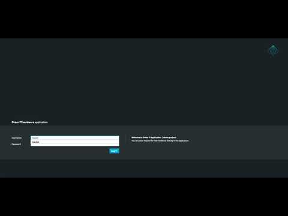

Case management improvements – data authorisation
It’s been a while since the last article about case management so I thought it’s the time to refresh that topic a bit. And the best way to do it is with the face lift of sample case application – IT Orders App.
So what’s new in case management since last time?
- case file authorisation
- case comments authorisation
- case close with comment
- index for case file items for searching
So let’s start with the most significant improvements – case file and case comments authorisation. Prior to this, all data and comments were visible to all participants of the case instance. So as long as user has access to case instance (is assigned to any of the roles) she will have access to all the data in the case file. Similar will have access to all comments.
This actually prevents of using rather common mechanism within data driven applications – access control and visibility. Let’s take into account situation where there are sensitive data that only certain roles in the case instance should be able to view or maybe there are needs to post private comments. Without the authorisation within the case instance users would not be able to deal with such use cases.
jBPM 7.5 will bring solution to this by allowing users to define restrictions for both comments and data within case file.
Case comments authorisation
Case comment can be restricted to roles within the case instance when the comment is:
- created
- updated
Whenever comment is updated or removed authorisation checks are performed to make sure that the action is done by a privileged user.
When comments are retrieved they are filtered by authorisation to ensure comments eligible for given user will be returned.
Case file authorisation
Case file data is protected individually, each item in the case file can have its own access restrictions. Similar to comments, whenever data is put into the case file or removed from it, authorisation checks are performed. When case instance or its data is retrieved it is filtered by authorisation to ensure only eligible data will be present in the data set.
Case file data access restrictions can be set in following ways:
- within case definition by setting custom meta data called customCaseDataAccess that supports multiple case file items with one or more roles for them. It expects following format:
item:role1,role2;another:role2,role3
- when creating a case instance (start a case) access restrictions can be given as part of the case file, next to data and role assignments
- when putting data into a case file access restrictions can be provided
Close case with comment
Case instance can be completed when there are no more activities to be performed and the business goal was achieved or it can be closed prematurely. In the second case, it’s quite often needed to make a comment why the case instance is being closed. This feature has now been provided as part of jBPM 7.5 so that can help to keep track of various scenarios that led to case instance being closed.
Indexing of case file items
Case file data is really powerful when case instance is running, rules can be built on top of them, they can be added or removed at any point in time. But when it comes to searching by that data, going through each case instance to find out if it matches given criteria or not does not sound like a good idea.
To provide more efficient support for such operation, case file data is indexed (similar to how process instance variables are). They are stored in data base table and constantly being updated so it represents the latest state of the case file.
This allows then to easily and efficiently:
- find case instances that contain given data (by name and value)
- filter case file by data name or type
- build up UI based on the index rather than loading all the data – keep in mind that case file might contain any type of information like large documents etc
Some of these features are included in the face lift of the IT Order Case App that you can watch below.

As usual, comments are more than welcome… ideas for improvements and real case studies for case mgmt even more :)